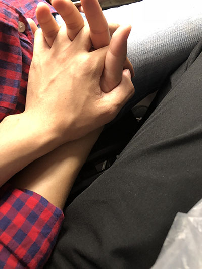
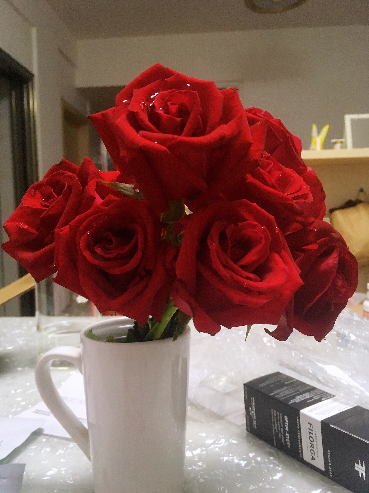

expect
你说我们就这样别再联系了，虽然明白却还是心痛了许久。
沉默了一天，心中那份思念并没有因为这份沉默而消散。
像海潮一样，退的越远，涨的越深。
像弹簧一样，抑制的越紧，反弹的越强。
摸了摸手机，正好是周五，打通了电话
结果好像没有自己想的那么遭呢。
picture info (2019.5.10)

Miss
你说你过来接我顺便一起吃个早餐，想想自己的样子，一身的汗臭味加上几天没来得及理的胡子。
竟然也开始不好意思起来。
心情好了一个通宵的火车没想象的那么漫长。
picture info (2019.5.11)

breakfast
我先出了站在路口远远的望着你，想了一个晚上，想了一晚上见面时的情景。
其实怎么都无所谓啦，关键是能见到她就行。
见面就递给我一支绿箭，感觉自己已经被一支绿箭又一次虏获了，小妖精，还是你懂我。
当时的心情无法言表，就是想往你身上蹭
你说我把的刚化的妆给蹭没了，我想说如果可以的话，以我买化妆品给你，然后一点一点蹭还给我
和想的稍稍有点出入，但是也是很美好呢。
picture info (2019.5.11 a.m)

shopping
逛商场应该两个人才比较热闹,两人一起逛街的场景，估计会深深烙在心里吧。
难得的一次逛街，买完衣服后才发现要一千多。
有点心疼的同时还有点佩服自己的眼光。
和自己现在的兴奋的心情比起来真的感觉不算什么。
picture info (2019.5.11 a.m)

ready
自己这个糟糕的状况总算是得到了解决。
掏出了自己随身携带的笔记本和笔，想把现在的心情写下来，寥寥草草的写了很多，感觉太多会被觉得啰嗦
精简了一通下来，发现和自己下心境还是有些差距。可能是我能写到的最好的了吧
在备忘录上存一份，留着以后一起看，就开始背我爱情演讲稿啦
特意从美团上买了一束花，将我当时最想说的话，以及和她最配的东西送给她
送花的小哥看我的眼神都不对，好尴尬啊。
picture info (2019.5.11 p.m)

dinner
熬了一夜的火车，困到窒息。我知道她肯定会给我消息的，设了一个特别关心。加一个22：00的闹钟
这样我就可以过滤掉不要的消息，也不至于睡着了
她说她分了，我记得我说过她分时候一定陪在她身边
晚上十点骑着行车就往老校区赶，买了两杯西瓜汁就往回赶
我想在她最难受最的时候在她心里能够有一丝丝是的甜意。
picture info (2019.5.11 p.m)

Nice
早早的穿好衣服去找她一起吃早餐
两人腻在一起的感觉真的很不错
如果说爱情是修了几世修来的福分，那我愿意用几世的痛苦换取现在一丝丝的甜意
愿时间停留在这一刻。
picture info (2019.5.12 a.m)

return
一起去了电玩城，只为将我在离别时最想表达的心情传达给你。
看着在车上累到睡着的你,默默像到，你放心一生并不长我会用心爱你的。
picture info (2019.5.12 p.m)

岁月静好
流年有爱，岁月静好。
若晴天和日，就静赏闲云。
若雨落敲窗，就且听水声。
你的过去我来不及参与。
你的未来我绝不缺席
时光未央,岁月静好
岁月静好
静听乔瓦尼的音乐，就像在读一首首温婉的抒情诗
又像在欣赏一幅幅美丽的风景画，在起伏的音符中，心绪如浮尘跌落
追逐远去的袅袅余音——开满雏菊的山坡，阳光从树叶间透过
青草芬芳，溪水低吟，两岸桃花烂漫
有你在，生命真的很美好。
安然若素，岁月静好
岁月静好
谁还记得，花开只为缘，纵使千秋树凉
也容不下浮世尘埃，唱一世繁华，呓语前一世的安宁。
谁相忘曾经，前世五百次的回眸，只为换仅是你我的相遇。
岁月静好，安之若素，经年之后，暮然回首，愿你还记得曾经那个单纯天真的女孩，
也记得笑的很甜很美的女孩
安然若素，岁月静好
simplicity
To the world you may be one person,but to one person you may be the world.
live
Live
Love is like a butterfly. It goes where it pleases and it pleases where it goes.
Girl next door
Live
Within you I lose myself, without you I find myself wanting to be lost again.
Girl next door
FLOWER
难怪玫瑰象征着爱情，因为它真的很美啊
带着刺却依然让人如此留恋
这就是它的魅力。
Rose
